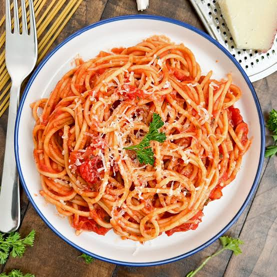

<Home
Here's how to make some spaghetti!

Ingredients:
- Fresh Spaghetti strands
- 2 Cups of marinara sauce
- 1/2 Cup of grated Parmesan cheese
Directions:
- Bring a large pot of salted water to a rolling boil
- Add the spaghetti and cook for 8 to 10 minutes (or 2 minutes if fresh) until al dente
- Drain the pasta and save a little starchy cooking water
- Toss the hot spaghetti with your warm tomato or meat sauce and top with Parmesan.
And voila! Enjoy your spaghetti!